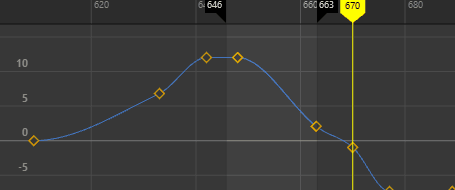
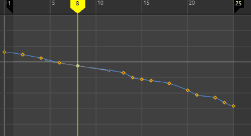

在曲线图编辑器(Graph Editor)和摄影表编辑器(Dope Sheet Editor)中，使用“偏移曲线”(Offset Curves)可以按指定量移动动画曲线或动画通道。
注： 在“曲线图编辑器”(Graph Editor)中使用动画曲线，在“摄影表编辑器”(Dope Sheet Editor)中使用动画通道。本主题中介绍的行为适用于这两种上下文。
- 在“曲线图编辑器”(Graph Editor)的“曲线”(Curves)菜单中，选择“偏移曲线”(Offset Curve) >

- 在“摄影表”(Dope Sheet)的“通道”(Channels)菜单中，选择“偏移关键帧”(Offset Keys) >

偏移曲线：“全部”(All)和“播放”(Playback)范围
- 时间范围(Time Range)
- 用于定义曲线或通道动画的移动范围。
-
- 全部(All)
- 偏移曲线或通道上的所有动画，包括负帧或超过时间滑块(Time Slider)或范围滑块(Range Slider)的“动画结束时间”(Animation End Time)中所显示时间的帧。
- 帧(Frame)
-
偏移由范围滑块(Range Slider)的动画开始时间和动画结束时间字段中的值定义的动画。

“范围滑块”(Range Slider)的动画开始时间和动画结束时间字段中的值
- 播放(Playback)
-
偏移由时间滑块(Time Slider)中显示的时间范围定义的动画。

时间滑块播放范围
- 自定义(Custom)
- 偏移由“偏移帧”(Offset frames)设置定义的范围所定义的动画。
- 偏移帧(Offset Frames)
- 选择帧的偏移方式。
-
注： 选择不能偏移到其任一侧的关键帧之外。在下面的动画中，最初在第 8 帧处的关键帧偏移到 100，但只能移动到下一帧（第 13 帧）。这样做是为了保持动画的完整性。
关键帧偏移到超出其范围的值
-
- 偏移量(Offset By)
- 按“偏移帧”(Offset Frames)字段中设置的帧数移动选定动画。例如，将值设置为 -15 会将选定动画向后推动 15 帧。
- 偏移至(Offset To)
- 将选定动画移动到在“偏移帧”(Offset Frames)字段中设置的帧编号。例如，将值设置为 210 会将选定动画推送到动画的第 210 帧。